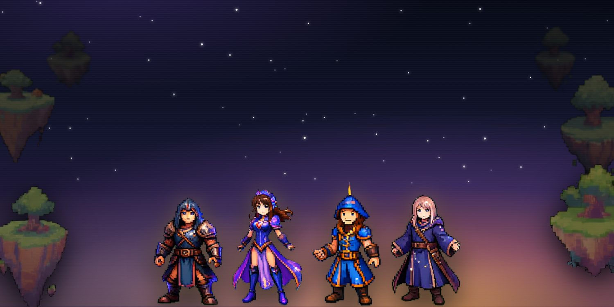
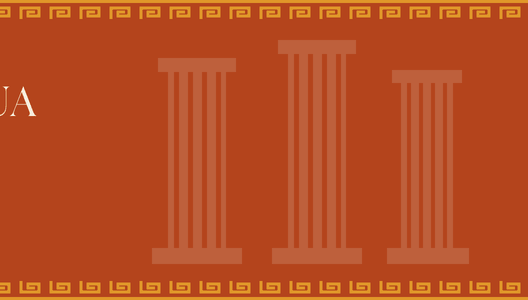
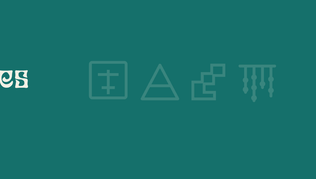
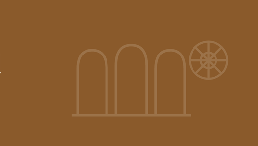
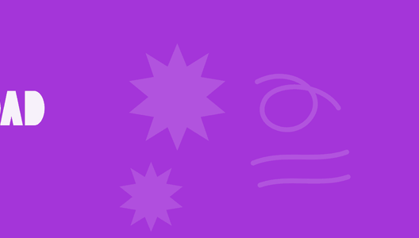
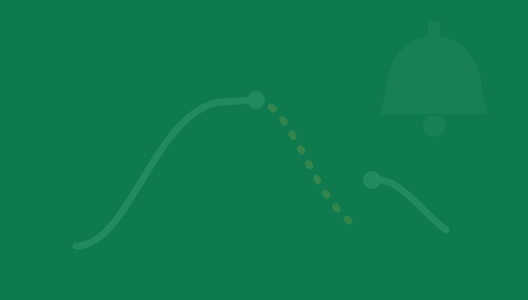
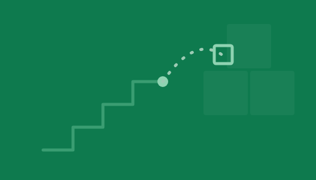
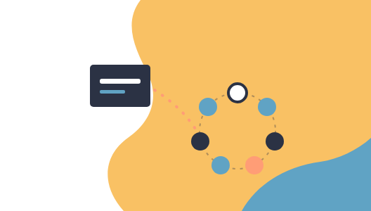

Fundamentos e Historia de la Pedagogía
Veinticinco siglos de pedagogía
Un curso de historia de la pedagogía, con sus juegos, sus láminas y sus fuentes.
Este sitio reúne un curso completo de historia de la pedagogía: ocho unidades que van de la palestra griega al círculo de cultura de Paulo Freire, con sus presentaciones, sus lecturas y un juego por cada una.
Los juegos no son adorno ni premio por portarse bien. Cada uno pone al jugador a tomar las decisiones que tomó de verdad una época: fundar una ciudad y decidir cómo educa a sus hijos, coordinar un círculo de alfabetización sin quitarle la palabra al grupo, condicionar a un perro y después preguntarse qué se hizo con eso en la escuela. Se juegan aquí mismo, en el navegador, sin instalar nada.
El curso
Ocho unidades, veinticinco siglos

Unidad 1La educación en la antigua Grecia
Paideia, areté y agathón · de la época oscura al helenismo
Espartano o ateniense →
Unidad 2Las civilizaciones imperiales
China, Egipto, los mexicas y los incas
Cuatro imperios, cuatro escuelas →
Unidad 3La educación medieval
Del monasterio a la universidad · siglos V al XV
Del claustro a la universidad →
Unidad 4La escuela de la modernidad
Taller en estaciones · dos rutas: la ciencia y la mujer
Las seis estaciones → Unidad 5
Unidad 5La Edad Moderna
Del humanismo a la Ilustración · siglos XV al XVIII
Quién dijo qué →
Unidad 6La psicología conductista
Watson · Pávlov · Skinner
Laboratorio del condicionamiento →
Unidad 7De recibir a construir
Piaget · Vygotski · Ausubel · Bruner
El lunes por la mañana →
Unidad 8Nadie educa a nadie
Pedagogía crítica · Paulo Freire
El círculo de cultura →Y por encima de todas
El Archipiélago
Y por encima de las ocho unidades hay un noveno juego, más grande, que las recorre todas: ocho islas a la deriva, una por época, y una llave que solo se arma al visitarlas.
Escritos
Jugar no es el premio al final de la clase
Por qué cada unidad de este curso termina en un juego, y qué tuvo que cambiar para que el juego enseñara algo.